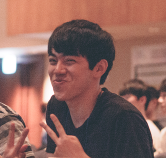
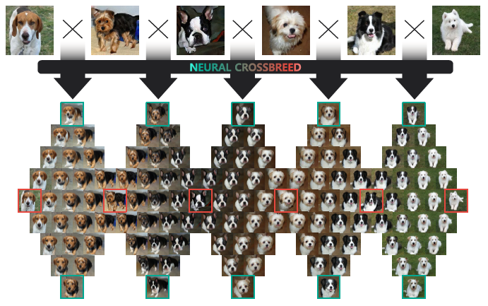
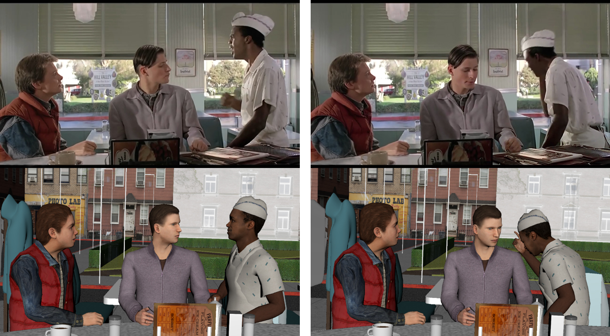

|
|
|

|
Kwanggyoon Edward Seo
PhD candidate
KAIST
Daejeon, Republic of Korea
skg1023 at kaist dot ac dot kr
[GitHub]
[CV]
|
I am a PhD candidate at GSCT KAIST, where I am advised by Prof. Junyong Noh.
My research interests are in image manipulation, computational photography, deep learning, and graphics.
Research
|

|
Neural Crossbreed: Neural Based Image Metamorphosis
Sanghun Park, Kwanggyoon Seo, Junyong Noh
SIGGRAPH Asia, 2020.
[Paper]
|
|

|
Cinematography Generation using a Reference Video
Kwanggyoon Seo , Sanghun Park, Jungeun Yoo, Jaedong Kim, Dawon Lee, Junyong Noh
Pacific Graphics Poster, 2019.
[Poster]
[Webpage]
|
Project
Development of Camera Work Tracking Technology for Animation Production using Artificial Intelligence
The goal of this project is to learn the cinematography of live-action movies using artificial inteligence techniques and recreate the camera work so that it can be used for animation production.
[Webpage]
|
This webpage template is taken from Richard Zhang's page
|